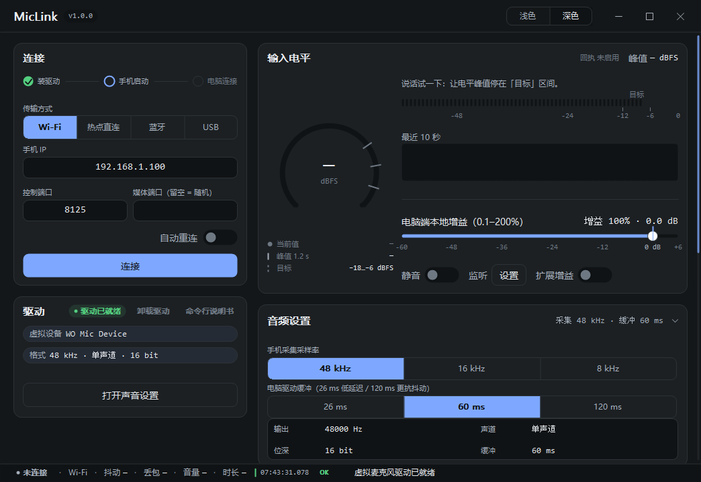
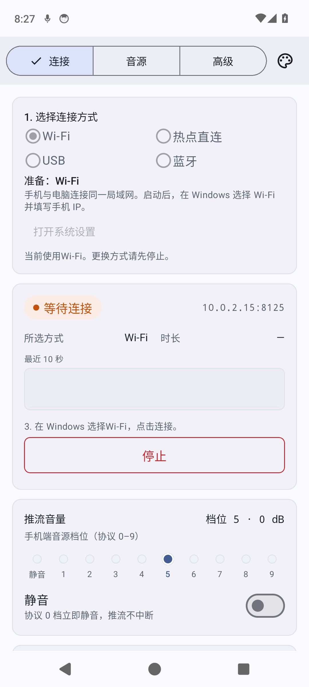
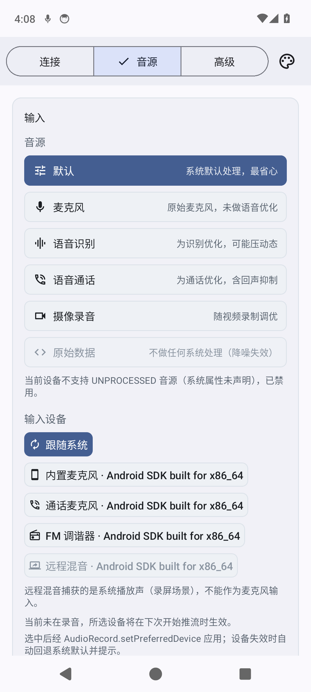
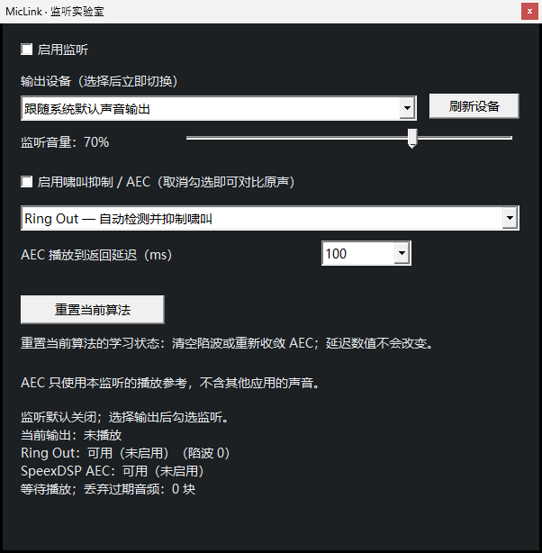
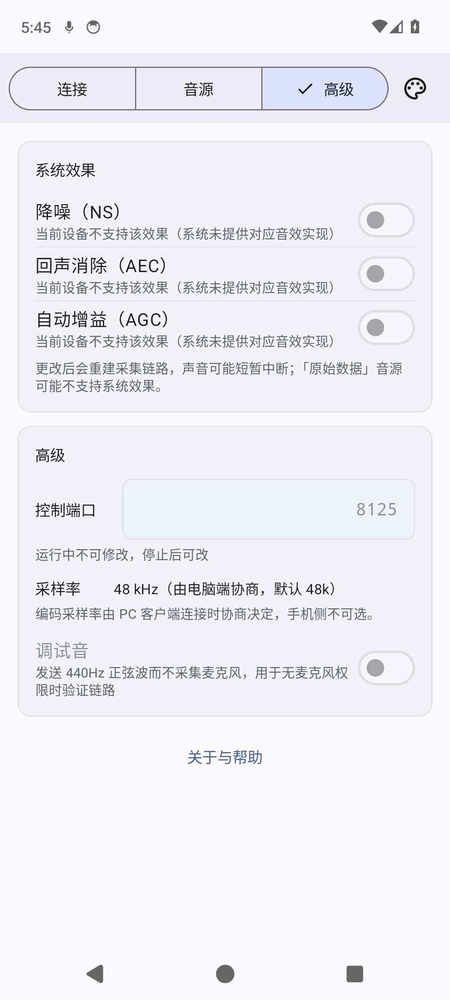
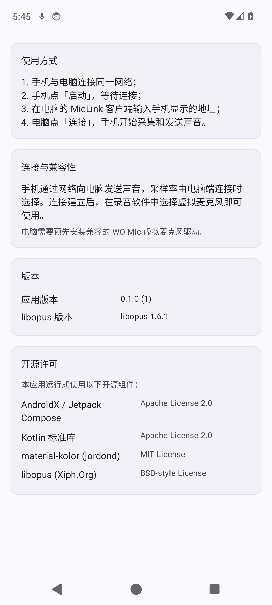

手机开始采集
Android 使用系统录音接口取得麦克风音频。
两端各做一件事，链路状态在客户端可见。产品音频走设备间网络，不经 MicLink 云服务。
Android 使用系统录音接口取得麦克风音频。
按 手机采集 · Windows 接收协商，音频通过 UDP/Opus 发送。
客户端显示连接、音量和会话信息，再把 PCM 写给驱动。
录音应用选择 WO Mic 虚拟麦克风端点即可采集。
界面展示连接、音源和采集控制。以下截图来自 Windows 客户端和 Android 模拟器的本轮验证材料，手机地址是测试环境数据。






把已验证与待验证分开写，避免把 CI 结果误读成所有设备组合都已通过。
先从 README 和 BUILD 指南开始；复现边界与第三方驱动说明也已列出。